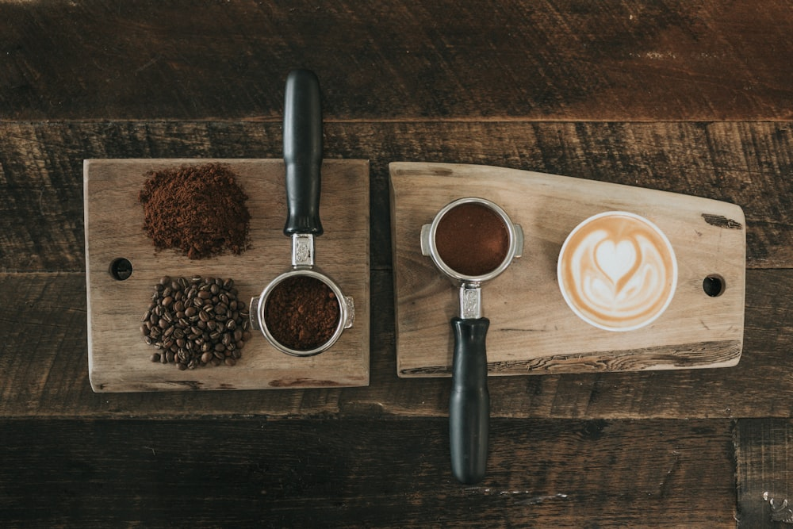

一個關於咖啡、閱讀與生活的故事
Porter Coffee 誕生於 2020 年，源自於創辦人對咖啡與文學的熱愛。我們相信，一杯好咖啡不僅是味覺的享受，更是心靈的慰藉。
在這個快節奏的都市生活中，我們希望打造一個讓人們可以放慢腳步、靜心閱讀、品味生活的空間。每一杯咖啡都是我們用心的呈現，每一本書都是我們精心的挑選。
從選豆、烘焙到沖煮，我們堅持每一個細節。我們與世界各地的咖啡農直接合作，確保每一顆咖啡豆都來自永續種植的農場，為您帶來最純粹的風味。

品質、永續、人文關懷是我們的核心價值
嚴選優質咖啡豆，專業烘焙技術，確保每一杯咖啡都達到最高標準
支持公平貿易，與咖啡農建立長期合作關係，保護環境與生態
打造溫暖的社區空間，舉辦文化活動，促進人與人之間的連結
Porter Coffee 在台北大安區開設第一家店，開始我們的咖啡旅程
榮獲「台北最佳獨立咖啡館」獎項，並開始舉辦每週讀書會
取得公平貿易認證，所有咖啡豆均來自永續農場
擴大閱讀空間，增加藝文展覽，成為社區文化交流中心